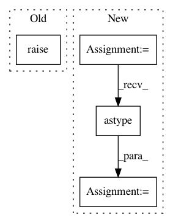

98aeec9fcc311086cb6953dded42b399af97f189,pyod/models/iforest.py,IForest,fit,#IForest#Any#Any#Any#,9
Before Change
def fit(self, X_train, y=None, sample_weight=None):
self.X_train = X_train
super().fit(X=X_train, y=y, sample_weight=sample_weight)
return self
def predict_proba(self, X_test, method="linear"):
After Change
// invert scores. Outliers comes with higher scores
self.decision_scores = self.detector_.decision_function(X_train) * -1
self.threshold_ = scoreatpercentile(self.decision_scores,
100 * (1 - self.contamination))
self.y_pred = (self.decision_scores > self.threshold_).astype("int")
return self
def decision_function(self, X_test):
In pattern: SUPERPATTERN
Frequency: 3
Non-data size: 4
Instances
Project Name: yzhao062/pyod
Commit Name: 98aeec9fcc311086cb6953dded42b399af97f189
Time: 2018-05-25
Author: 9io9mZ9K#nNL
File Name: pyod/models/iforest.py
Class Name: IForest
Method Name: fit
Project Name: yzhao062/pyod
Commit Name: 98aeec9fcc311086cb6953dded42b399af97f189
Time: 2018-05-25
Author: 9io9mZ9K#nNL
File Name: pyod/models/ocsvm.py
Class Name: OCSVM
Method Name: fit
Project Name: instacart/lore
Commit Name: 644f6485707aaf7d670216f7ea0885b7a0bc8a26
Time: 2017-12-08
Author: montanalow@users.noreply.github.com
File Name: lore/encoders.py
Class Name: Token
Method Name: transform